Exposição fotográfica e mostra literária
13/06 a 30/07
The Oak Wine & Beer
Imagens que trazem uma mensagem
Visual e escrita.
Fotógrafxs e escritores curitibanos se
reunem com o intuito de causar uma
interAÇÃO com o público através de
suas imagens e textos.
O mundo que vivemos hoje passa por
sérias questões, que trazem inúmeras
consequências negativas para a vida
das pessoas.
Como se manter firme e continuar
acreditando que podemos mudar
esse cenário?
Como resgatar a esperança nas
pessoas e cuidar do Planeta que
vivemos?
São questões assim, que permeiam
essa exposição.
Um suspiro de esperança e
positividade.
Uma luz Solar no fim do túnel.
Um brilho.
Um chamado de amor e paz.

{{artist.name}}
{{item.dimensions}}
|Tiragem limitada 1/{{item.number_of_prints}}
Impressão em papel {{item.print_standard}}
Qualidade